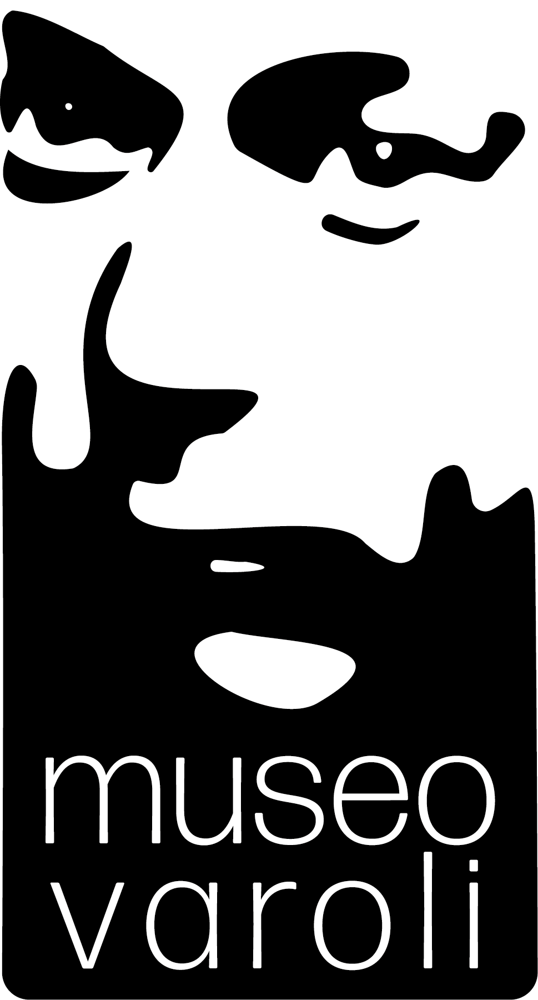

Pieve Cesato · 66ª Edizione
Una giornata dedicata ai mezzi d’interesse storico, tra esposizione, premiazioni, giro turistico e visita al Museo Varoli di Cotignola.
Programma

Per informazioni
Stefano Assirelli · Cell. 339 7212242
Antonio Proni · Cell. 333 1957315
Email · automotopievecesato@libero.it